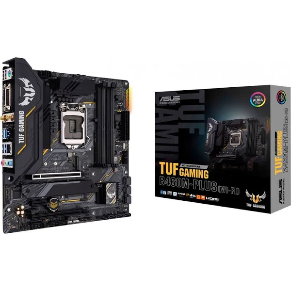
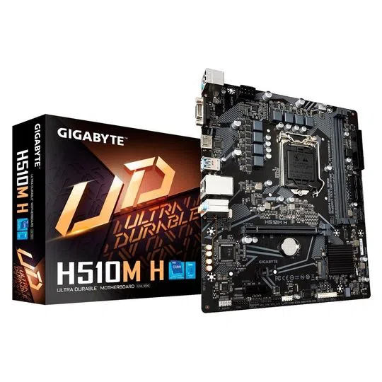

Placa Mãe

PARA ESCOLHER A MELHOR PLACA MÃE DEVEMOS PRESTAR ATENÇÃO NAS SEGUINTES INFORMAÇÕES:
Processador:
Como cada placa-mãe possui compatibilidade com determinada geração de processadores, é necessário se atentar ao seu modelo para evitar adquirir uma placa que possa não ser compatível com o processador que deseje utilizar.Soquete:
Você precisará de uma placa-mãe que tenha um soquete específico. Com uma breve pesquisa no Google, é possível saber a partir da versão do seu processador, qual o soquete ideal para o modelo escolhido.Chipset:
O chipset indica o conjunto de chips e circuitos integrados e determina as configurações deste hardware. Dentre essas possibilidades, a principal é a de realizar o overclock, função que turbina a performance do processador e da memória RAM. Determina a frequência dos pentes de memória RAM e armazenamento em HD ou SSD. Essa peça também está ligada a qualidade de som do computador.Tamanho da Placa Mãe:
Por se tratar de uma peça que interliga todos os outros componentes do computador, o ideal é que o modelo da placa-mãe escolhido não fique tão apertado e deixe espaço suficiente para passagem de ar. Hoje existem quatro tamanhos de placa-mãe: EATX (30,5 x 33 cm), ATX (30,5 x 24,4 cm), MicroATX (24,4 x 24,4 cm), Mini-ITX (17 x 17 cm).Slots de memória RAM e PCIe:
O espaço disponível para os slots de memória RAM pode variar de dois slots em modelos mais simples a quatro slots em modelos mais sofisticados. Quanto maior a quantidade de slots de memória RAM, melhor o desempenho do seu computador. Avalie também o tipo de memória suportada.Conexões:
Sugerimos a escolha de uma placa-mãe que ofereça uma boa quantidade de conexões, para que você possa conectar todos os periféricos sem preocupação.Dica: Procure por uma placa-mãe que tenha uma quantidade significativa de portas USB e entradas SATA. No caso das entradas SATA, elas são importantes para a instalação de discos de armazenamento adicionais, principalmente de SSDs dos tradicionais HDs.
PRODUTOS
Placa-Mãe Asus Rog Strix Z590-E Gaming Wifi, Intel, mATX, DDR4, RGB, Wifi, - 90MB1640-M0EAY0

A Vista: R$ 2.299,999
A Prazo: R$ 2.705,87 Em até 10x de R$ 270,58 sem juros no cartão Ou em 1x no cartão com até 10% OFF
Placa Mãe Asus TUF Gaming B460M-Plus, Intel LGA1200, mATX, DDR4
A Vista: R$ 839,99
A Prazo: R$ 988,22 Em até 10x de R$ 98,82 sem juros no cartão Ou em 1x no cartão com até 10% OFF
Placa-Mãe Gigabyte H510M H Intel LGA1200 (10ª e 11ª Geração), DDR4, M.2 Nvme
A Vista: R$ 796,36
A Prazo: R$ 849,90 Em até 10x de R$ 84,99 sem juros no cartão Ou em 1x no cartão com até 10% OFF